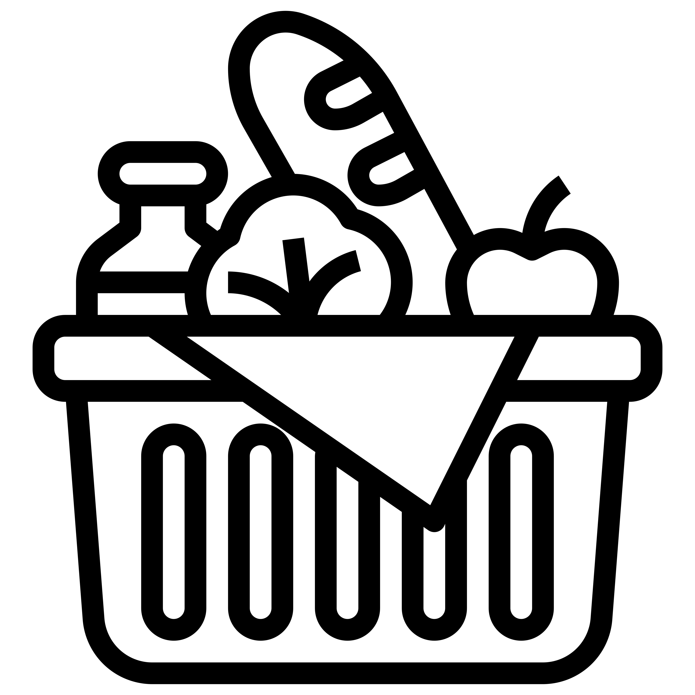
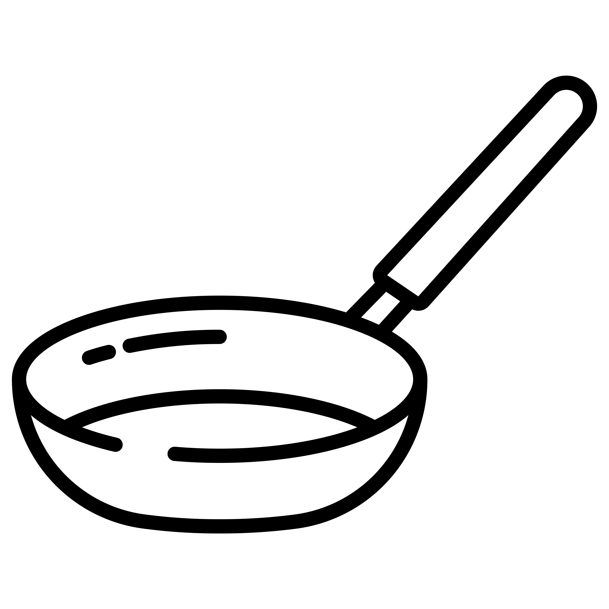

<div class="features-box-container">
    <div class="features-box">
        <div class="single-feature">
            
            <h1>Huge food database</h1>
            <p>Millions of food items containing detailed nutritional information, such as calories, fat, carbs and
                protein content means we’ll calculate everything correctly for you.</p>
            <button type="button" routerLink="/food-dictionary-page">to all food items</button>
        </div>
        <div class="single-feature">
            
            <h1>Hundreds of tasty and nutritious recipes</h1>
            <p>Enjoy hundreds of easy-to-cook recipes filled with nutritious and tasty food.</p>
            <button type="button" routerLink="/recipes-page">to all recipes</button>
        </div>
        <div class="single-feature">
            
            <h1>Track your way to success</h1>
            <p>Track what you eat with the help of our food and water trackers to maintain a balanced everyday life.</p>
            <button type="button" routerLink="/profile-page">to your profile</button>
        </div>
    </div>
</div>